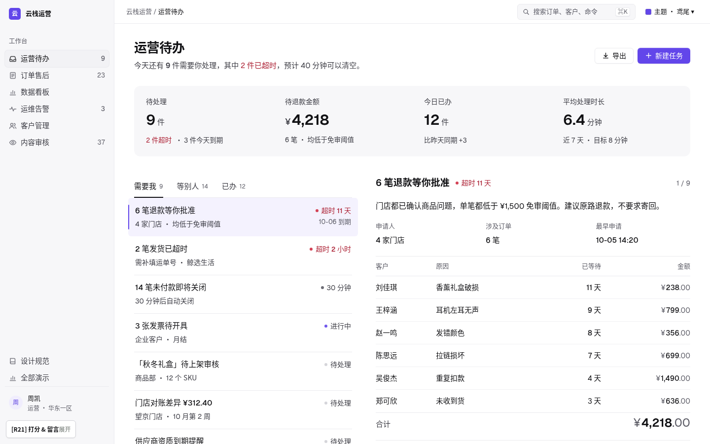

这套语言只做一件事：让人在任何组件库里，都能更快地看懂、核对、做决定、离开。R21 仍是方向 A「精简」。R20 被评“看起来有点吃力”，这一轮只做一件事：降低阅读负担。正文 15/24、近黑；次要文字加深，只留两档灰；页标题 26、区块标题 17、关键数字 30；KPI 放进一条极浅底色带，不再用竖线切格；列表行 46+、每行只留标题、说明、状态，到期时间悬停才出现；表格减列，城市小字悬停才出现；同屏只有一个主色按钮和一处红色。

打开演示 → 六种后台都按这套做正文 15、近黑；每屏一个焦点；次要信息悬停才出现。分组靠留白和极浅底色，不靠满屏细线。
界面黑白灰；鸢尾只给主操作、选中、焦点；状态是圆点 + 文字，红色只给异常。
⌘K 命令面板、G + 字母跳页、J / E / Z 流转；每个主操作旁边写着快捷键。
在 1440×900 下数了 R20 运营待办首屏：约 120 段文字、40 多条细线、4 种字号的灰字同时出现。详细记录见 reading.md。
所有业务页：页头（标题 18 + 一句结论 + 右侧操作）→ KPI 数字带（发丝线上下、竖线分隔）→ 主体（整宽表格，或 5 栏列表 + 7 栏详情，或 8 栏图表 + 4 栏侧栏）。区块之间 20，栏之间 20，没有卡片。
按钮和输入框都是 32px、圆角 6；状态是圆点 + 文字；表头 40、行 46；快捷键用 ⌘K 这样的键帽。以下都是现场渲染，可以悬停和聚焦，并随主题变化。
| 单号 | 客户 | 状态 | 已等待 | 金额 |
|---|---|---|---|---|
| AS-10241 | 刘佳琪 | 超时 | 11 天 | |
| AS-10224 | 周子涵 | 处理中 | 3 天 | |
| AS-10211 | 马天宇 | 已完成 | 0 天 |
换个关键词，或者清空筛选
左边是本语言的做法，右边是常见但被禁止的做法。第 13 条在「主题」一节。
为什么：主色按钮是“下一步该做什么”的唯一答案。出现两个，就等于没有答案。
--role-action · 其余用次按钮 / 文字按钮
为什么：用户扫的是“超时 / 处理中 / 已完成”这几个字。状态不加底色、不加边框：6px 圆点给语义，文字保持次要灰；只有“异常”的文字变红，所以红色一出现就是“出事了”。
.tag · 6px 圆点 · 12.5 · 无底色 · 只有异常文字着色
| AS-10241 | 超时 | ¥238.00 |
| AS-10224 | 处理中 | ¥0.00 |
| AS-10229 | 即将超时 | ¥429.00 |
| AS-10211 | 已完成 | ¥520.00 |
| AS-10215 | 待处理 | ¥1,299.00 |
| AS-10241 | ◆ | ¥238.00 |
| AS-10224 | ◐ | ¥0.00 |
| AS-10229 | 即将超时 | ¥429.00 |
| AS-10211 | 已完成 | ¥520.00 |
| AS-10215 | ○ | ¥1,299.00 |
为什么：一件接一件办：左边是排好序的列表，右边是当前这件的详情（说明 → 关键信息 → 明细 → 底部操作栏）。操作栏属于详情卡，不浮在页面上，不会挡住内容；办完自动选中下一件，可撤销。
列表 5 栏 · 详情 7 栏 · .cf 卡底操作栏
为什么：金额要上下比较大小。等宽数字（tabular）+ 右对齐，个位对个位，一眼看出谁大。
font-variant-numeric: tabular-nums · ¥ 与小数降一级
| 门店 | 实付 |
|---|---|
| 朝阳 | |
| 望京 | |
| 国贸 |
| 门店 | 实付 |
|---|---|
| 朝阳 | ¥12480 |
| 望京 | ¥968.5 |
| 国贸 | ¥1111.00 |
为什么：线是用来分隔的，不是用来装饰的。只有一档浅色 1px 线，内容才是主角。
--color-hairline #E9E6F1 · 禁止 2px+ 边框与深色描边
| 朝阳门店 | 128 单 |
| 望京门店 | 96 单 |
| 国贸门店 | 71 单 |
| 朝阳门店 | 128 单 |
| 望京门店 | 96 单 |
| 国贸门店 | 71 单 |
为什么：页面就是一张白纸。区块之间用 1px 发丝线和留白分隔，不画卡片、不加底色、不加投影；KPI 是一条用竖线分隔的数字带。投影只给真正浮起来的东西：命令面板、菜单、Toast。
--color-hairline · 无卡片 · --shadow-float 只给浮层
为什么：间距表达关系：越近越相关。只用三档，关系就一眼可读；随手写 13、19、27，页面就散了。
--rhythm-in 8 · --rhythm-group 16 · --rhythm-block 32
为什么：R20 被评“看起来有点吃力”：14px 加浅灰，读久了累。页标题 26/600 · 区块标题 17/600 · 正文与列表标题 15–15.5 · 表格 14.5 · 说明 14 · 最小 13（只给时间、单位等次要信息）。正文近黑 #111114，次要 #3E3E46，标签 #5C5C66。
15 / 14.5 / 14 / 13 / 17 / 26 / 30 · 字重 400 / 500 / 600
为什么：“确定吗？”什么也没说。要写清楚会发生什么、能不能撤销，按钮上直接说出动作和数量。
--role-danger 只用于确认按钮 · 默认焦点落在“取消”
为什么：空、加载、出错是常态。每一种都要说明“为什么这样”和“现在可以做什么”，不留死胡同。
空：原因 + 下一步 · 加载：骨架行 · 出错：影响范围 + 重试 + 编号
为什么：后台要一屏看得多，但不能挤。行高 44（紧凑 36），主信息正文色，次要信息降一级灰，操作悬停时才出现。
--row-h-default 44 · --row-h-compact 36 · text-2 / text-3
| 订单 | 客户 | 实付 |
|---|---|---|
| #2410-0917 朝阳门店 | 王先生 | |
| #2410-0918 望京门店 | 李女士 |
| 订单 | 门店 | 客户 | 实付 | 操作 |
|---|---|---|---|---|
| 2410-0917 | 朝阳门店 | 王先生 | 612 | 查看 编辑 删除 复制 |
| 2410-0918 | 望京门店 | 李女士 | 1012 | 查看 编辑 删除 复制 |
为什么：用键盘的人要知道自己在哪。焦点是 2px 主色实线外框，离开元素 2px，不靠颜色变化暗示。（试试按 Tab）
--focus-outline 2px solid · --focus-offset 2px
为什么：页头（标题 + 一句结论 + 操作）、一条 KPI 数字带、主体（表格，或列表 + 详情）。再加图表就替换掉一种，而不是叠上去。R15/R16 首屏同时有主图卡、堆叠条、队列、明细、表内进度条、时间脊、浮动后果条，每样都合理，叠在一起就没有落点。
页头 · KPI 行 · 主体
为什么：汉字和字母走系统黑体（苹方 / 鸿蒙黑体 / 微软雅黑），数字固定用 Geist（R16 选定），woff2 放在仓库 fonts/，用 unicode-range 只覆盖数字和 ¥ % + − 等符号，不依赖任何 CDN，每台机器一样。全部 tabular-nums；大数 600，表格 500，坐标轴 400。Geist Mono 只给代码；单号用 Geist 表格数字。
--font-sans（"Geist Fig" 打头）· --font-mono = Geist Mono（只给代码） · font-variant-numeric: tabular-nums
R14 的反馈是“宋体似乎不符合这个风格”。复盘后，三件事一起收：
宋体有书卷气、编辑感，放在每天要处理几十件事的工作台上显得端着。全站只用无衬线，中文走系统黑体，不依赖任何网络字体。
48–72px 的展示字像海报。现在页面标题 24、主图卡结论 28、关键数 40，靠字重和留白拉开层级。
浮起的大投影换成 1px 细描边 + 极浅阴影；入场只淡入 3px，240ms 内完成；保留更好的图表和主图卡。
--fs-display-xl 28/36 · 600--fs-figure-xl 40 · 600 · tnum · -2%--fs-headline 18/26 · 60014/22 · 400--fs-eyebrow 12 · 500字体栈："Inter", "SF Pro Text", -apple-system, "Segoe UI", "PingFang SC", "HarmonyOS Sans SC", "Noto Sans CJK SC", "Microsoft YaHei", system-ui, sans-serif。Inter 是可选的：本机没有就用系统字体，国内网络下不会白屏或闪字。
为什么：精简界面靠键盘提效：⌘K 命令面板能搜到每个页面和操作；常用操作有单键（J 下一件、E 办完、Z 撤销、C 新建），按钮上直接显示键帽；G + 字母跳页。键帽是 18px 灰色小块，不抢视线。
kbd 18px · ⌘K · / · G+字母 · J / E / Z / C
为什么：“看起来吃力”多半不是丑，而是要读的东西太多。每屏只设一个焦点（最大的字或数字）；列表行最多 3 项信息；表格最多 6–7 列；次要信息（城市、到期、操作记录）悬停或展开才出现。分组靠留白和极浅底色，不要满屏细线。
焦点 1 · 列表行 ≤ 3 项 · 表格 ≤ 7 列 · 分组间距 40
组件只认角色，不认色值。换主题时只换取值，角色和处理方式不变。
| 角色 | 样本 | 视觉处理 | 令牌 |
|---|---|---|---|
| 框架（侧栏） | 浅灰侧栏 + 1px 发丝线；当前项 = 浅灰底 + 发丝边，不用主色 | --role-frame | |
| 画布 | 画布，所有纸面的底 | --role-canvas | |
| 区块 | 白纸上的区块：上方 1px 发丝线 + 留白，没有卡片、底色、投影 | --role-surface | |
| 主操作 | 主色实底，每屏 1 个，写出动作 + 数量 | --role-action | |
| 次操作 | 纸底 + 1px 强边 | --role-border-strong | |
| 轻操作 | 无边无底，悬停才出底色 | --role-text-2 | |
| 危险操作 | 只出现在确认层里，配后果说明 | --role-danger | |
| 状态 · 成功 / 进行 / 注意 / 异常 | 6px 圆点 + 12.5 文字，无底色；五种语义：默认 / 进行中 / 提醒 / 异常 / 完成，只有异常文字着色 | --role-success … danger | |
| 正文 / 次要 / 辅助 | 正文 次要 辅助 | 三级文字，不再用更多灰 | --role-text-1/2/3 |
| 数字 / 金额 | Geist 表格数字（自托管），右对齐；¥ 与小数降为三级灰 | tabular-nums | |
| 卡头 | 告警 按严重程度 | 40px 高，标题 13/500 + 12 灰色说明，下方一条发丝线 | --h-card-head |
| 焦点 | 2px 主色实线，偏移 2px | --focus-outline |
下面是当前这一套值。换成别的值也可以，只要仍满足 12 条规矩（例如主操作对白字对比 ≥ 4.5:1（AA）、状态色不做大面积底色）。
#17131F#6246EA#F5F4F9#FFFFFF#E9E6F1#CF2F44#12805C12 / 1613 / 2014 / 2216 / 2420 / 2824 / 3228 / 328163240610324636232上排：Ant Design 5 与 MUI 的默认外观（示意）。下排：只改主题配置、不改组件代码之后。
// ConfigProvider theme
token: { colorPrimary:'#6246EA', colorBgLayout:'#F5F4F9',
colorBgContainer:'#FFFFFF', colorBorderSecondary:'#E9E6F1',
colorError:'#CF2F44', colorSuccess:'#12805C',
borderRadius:6, controlHeight:32, fontSize:15,
boxShadow:'none', wireframe:false }
components: { Table:{ cellPaddingBlock:12, headerBg:'#F9F8FC' },
Tag: // 不用 Tag 表示状态 → 用 Badge status + 文字 }// createTheme
palette:{ primary:{main:'#6246EA'}, error:{main:'#CF2F44'},
background:{default:'#F5F4F9', paper:'#FFFFFF'}, divider:'#E9E6F1' },
shape:{ borderRadius:6 }, shadows: Array(25).fill('none'),
typography:{ fontSize:14, button:{ textTransform:'none', fontWeight:550 } },
components:{ MuiButton:{ defaultProps:{ disableElevation:true } },
MuiChip: // 状态改用 6px 圆点 + 文字 }| 角色 | Ant Design 5 | Element Plus | shadcn/ui | MUI |
|---|---|---|---|---|
| 主操作 | colorPrimary | --el-color-primary | --primary | palette.primary.main |
| 画布 | colorBgLayout | --el-bg-color-page | --background | background.default |
| 白纸 | colorBgContainer | --el-bg-color | --card | background.paper |
| 发丝线 | colorBorderSecondary | --el-border-color-lighter | --border | divider |
| 异常 | colorError | --el-color-danger | --destructive | palette.error.main |
| 正文 / 次要 | colorText / colorTextSecondary | --el-text-color-primary / regular | --foreground / --muted-foreground | text.primary / secondary |
| 圆角 | borderRadius: 6 | --el-border-radius-base | --radius: .375rem | shape.borderRadius |
| 投影 | boxShadow: none | --el-box-shadow-light: none | 去掉 shadow-sm | shadows: none |
| 控件高 / 字号 | controlHeight: 32 · fontSize: 15 · lineHeight: 1.6 | --el-component-size: 32px · --el-font-size-base: 15px | h-8 · text-[15px] · leading-6 | size="medium" · typography.fontSize: 15 |
| 表格行 | Table size="middle"（cellPaddingBlockMD: 12） | size="large" | TableCell h-[46px] | Table size="small" |
| 卡片 | Card bordered={false} + 上发丝线 | --el-card-border-color: transparent | 不用 Card，用 border-t | Paper elevation={0} square |
| 数字字体 | fontFamily: "Geist Fig", -apple-system, "PingFang SC", "Microsoft YaHei", sans-serif（四个库都一样，Geist 自托管） | |||
| 焦点 | controlOutline + outline 覆盖 | :focus-visible 覆盖 | --ring | focusVisible 覆盖 |
默认是 雾紫·鸢尾，不写任何属性就是它。其余 6 套是正式主题，用 <html data-theme="lake"> 打开；主题文件只覆盖和默认不同的值。右上角「主题」可以随时切换，本页所有色样、示例和下面的代码会跟着变。当前：。
为什么：换主题后，人仍要靠同样的位置和同样的颜色含义找到“下一步”和“出问题的地方”。主题一旦改了结构或状态含义，就变成了另一套产品。
[data-theme] 只覆盖 --color-*
| 主题 | 类型 | 性格 | 色样（侧栏 · 画布 · 纸面 · 主色 · 成功 · 注意 · 异常） | 主色 | 对比度 | |
|---|---|---|---|---|---|---|
雾紫·鸢尾iris（无属性） | 默认 | 偏紫的靛色更有当代感；侧栏是紫调墨色，安静但不老气 | #6246EA | 21/21 AA | ||
霜白·钴蓝cobalt | 深色侧栏 | R10 原版：冷白纸面、夜蓝侧栏，钴蓝只给动作，最稳的默认 | #3D4BE0 | 21/21 AA | ||
湖蓝·深青lake | 深色侧栏 | 偏青的深湖蓝，冷静、清透，适合数据和运维类后台 | #0A6E9C | 21/21 AA | ||
石墨·电蓝graphite | 深色侧栏 | 纯中性石墨灰 + 唯一一支高亮电蓝，像专业工具软件 | #0B5FFF | 21/21 AA | ||
晴窗·蓝宝daylight | 浅色侧栏 | 浅色侧栏版：整页通透明亮，蓝宝石色做动作，层次靠细线 | #2B59C3 | 21/21 AA | ||
暖砂·珊瑚coral | 深色侧栏 | 暖米灰纸面 + 克制的珊瑚红，有温度但依然整齐 | #C4402A | 21/21 AA | ||
夜幕·星蓝midnight | 深色模式 | 深色模式：深夜蓝灰底、柔和星蓝，长时间盯屏更省眼 | #5163F0 | 21/21 AA |
原则都一样：默认一份配置，主题只放差异；切换时只换配置对象或根节点属性，组件代码不动。
// themes.ts —— 默认 + 差异
const base = { colorPrimary:'#6246EA',
colorBgLayout:'#F5F4F9', colorBgContainer:'#FFFFFF',
colorError:'#CF2F44', borderRadius:6, boxShadow:'none' };
const themes = { lake:{ colorPrimary:'#0A6E9C', … },
midnight:{ algorithm: theme.darkAlgorithm, … } };
<ConfigProvider theme={{ token:{...base,...themes[id]} }}>/* 默认写 :root，主题只写差异 */
:root { --el-color-primary: #6246EA;
--el-bg-color-page: #F5F4F9;
--el-border-color-lighter: #E9E6F1; }
html[data-theme="lake"] { --el-color-primary:#0A6E9C; … }
html[data-theme="midnight"] { /* 再加 class="dark" */ }/* globals.css */
:root { --primary: #6246EA; --background: #F5F4F9;
--card: #FFFFFF; --border: #E9E6F1;
--destructive: #CF2F44; --radius:.375rem; }
[data-theme="lake"] { --primary:#0A6E9C; … }
/* next-themes: attribute="data-theme" */// 一份基础 + 每个主题 deepmerge
const base = createTheme({ palette:{ primary:{main:'#6246EA'},
background:{default:'#F5F4F9', paper:'#FFFFFF'},
error:{main:'#CF2F44'} }, shape:{borderRadius:6} });
const themes = { lake: createTheme(base,{ palette:{primary:{main:'#0A6E9C'}} }),
midnight: createTheme(base,{ palette:{mode:'dark', …} }) };完整取值见 reference-tokens.css：② 默认（鸢尾）③ 6 个主题的覆盖块 ④ 不随主题变化的尺寸 / 字号 / 间距。